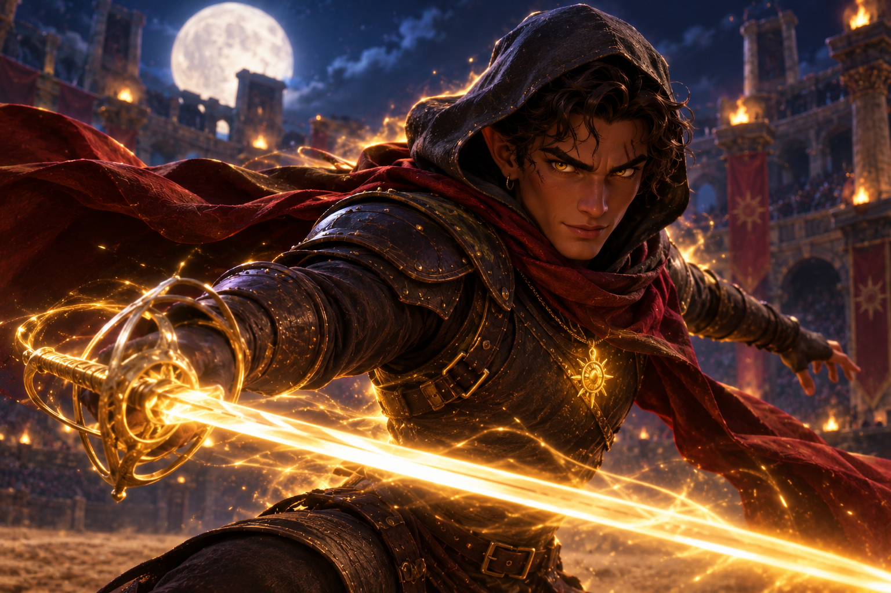

Wood Elf Paladin · Oath of Vengeance · Level 5

"Some of us meant our oaths. I'll see mine through to the end."
Cassian was raised by the Order of the Dawn, a small band of wandering paladins who protected the forest villages of the wood elves. His mentor, an old knight named Aurelis, gave him the gold sun pendant he still wears, a symbol that even the darkest night always ends.
Then the Dragonborn cult came. In a single night they burned the Order's hall and dragged its paladins away in chains. Cassian fought until a cultist's blade split his right eyebrow and the world went red. When he woke, Aurelis and the others were gone.
Cassian swore the Oath of Vengeance that same night. He hunted the cult alone for years, until he got too close and ended up locked in the very prison where they kept the paladins they captured. That is where the troupe found him, sitting in his cell with a smirk, as if he had been waiting for them all along.
Cassian is cool, cocky, and almost impossible to impress. He hides everything behind a lazy smirk and a sharp joke, and he would rather lean against a statue than admit he is enjoying himself. Underneath it, he never forgets the people he lost, and the moment the cult shows its face, the smirk disappears.
The gold sun-shaped pendant around Cassian's neck is the last thing Aurelis ever gave him, and it serves as his holy symbol. When he swears a Vow of Enmity, the pendant blazes with golden light, and that same light runs down his rapier when he smites. He has never once taken it off.